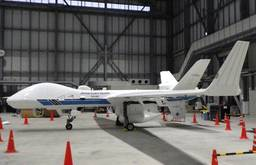
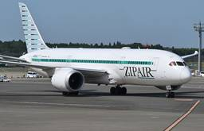
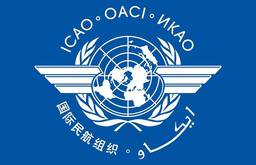
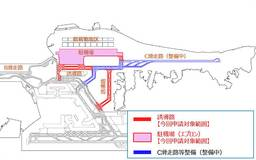
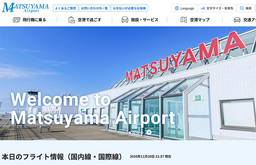
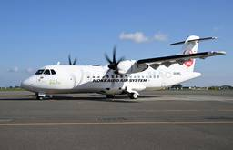

Aviation Wire
https://www.aviationwire.jp
航空経済紙「Aviation Wire」は、航空機やエアライン、空港、官公庁に関する情報や各種統計などをお届けして参ります。
フィード

海保無人機シーガーディアン北九州事故、自動着陸11回やり直し＝運輸安全委
Aviation Wire
国の運輸安全委員会（JTSB）は、海上保安庁の遠隔操縦無人機MQ-9B「シーガーディアン」（登録記号JA482A）が、2025年11月23日に北九州空港への着陸時にプロペラと垂直尾翼を滑走路に接触させた「航空事故」の経 […]
2時間前

ZIPAIR、ブラックフライデーで6路線セール 新路線クアラルンプールも
Aviation Wire
ZIPAIR（ジップエア、TZP/ZG）は11月20日、成田発の国際線6路線を対象にブラックフライデーセールを始めた。販売は30日までで、搭乗期間は21日から2027年3月14日まで。エコノミークラス「Standard […]
4時間前

ICAO、理事会40カ国体制に エチオピアなど4カ国追加選出
Aviation Wire
国連の専門機関であるICAO（国際民間航空機関）は現地時間11月20日、執行機関である理事会の追加選挙で、エチオピア、インドネシア、オマーン、トルコの4カ国を選出した。理事国の定数を36カ国から40カ国に拡大したことに […]
5時間前

成田空港、新貨物地区の誘導路・駐機場新設を国交省許可 34年末
Aviation Wire
国土交通省航空局（JCAB）は11月20日、成田国際空港会社（NAA）が申請していた成田空港の誘導路と駐機場（エプロン）の新設を、同日付で許可した。新貨物地区に必要となる施設で、完成期日は2034年12月31日を予定し […]
8時間前
高知空港、国際線PSFC上限1300円 27年4月発券分から
Aviation Wire
国土交通省航空局（JCAB）は11月20日、高知空港の国際線旅客取扱施設利用料（PSFC）について、満12歳以上の大人1人あたり1300円、満2歳以上12歳未満の子供650円を上限とする申請を同日付で認可した。高知空港 […]
9時間前

ジェットスター、国内3696円から ブラックフライデー11/26まで
Aviation Wire
ジェットスター・ジャパン（JJP/GK）と豪州のジェットスター航空（JST/JQ）のジェットスター・グループ2社は11月20日、日本発着全31路線を対象とした「ブラックフライデー」セールを始めた。片道運賃は国内線が36 […]
17時間前

松山空港、民営化を国交省検討 民間ヒアリング実施
Aviation Wire
国土交通省航空局（JCAB）は、国が管理する松山空港の民営化について、「コンセッション方式」の導入可能性を調べるため、民間事業者などから意見を募るヒアリングを実施する。愛媛県の要望を踏まえ、事業スキーム案や導入に向けた […]
19時間前
ANA、機内・ラウンジのワイン12月刷新 富山産白ワインも
Aviation Wire
全日本空輸（ANA/NH）は11月20日、国際線・国内線の機内や空港ラウンジで提供するワインを12月から順次刷新すると発表した。国際線ファーストクラスでは、富山県氷見市のワイナリー「SAYS FARM（セイズファーム） […]
1日前

ピーチ、顧客情報899万件漏えい メール配信ユミルリンクに不正アクセス
Aviation Wire
ピーチ・アビエーション（APJ/MM）は11月20日、顧客向けメールの配信を委託しているユミルリンク（4372）のシステムが第三者から不正アクセスを受け、顧客の個人情報が漏えいしたと発表した。漏えい対象は899万710 […]
1日前

函館緊急着陸のHAC機、残る左エンジンもトルク一時0％ 乗員は認識せず＝運輸安全委 2
2
Aviation Wire
国の運輸安全委員会（JTSB）は、2025年12月に日本航空（JAL/JL、9201）グループの北海道エアシステム（HAC、NTH/JL）のATR42-600型機（型式はATR42-500、登録記号JA14HC）が丘珠 […]
1日前